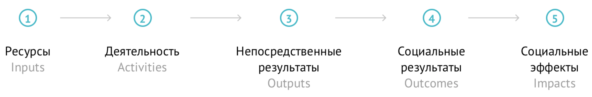
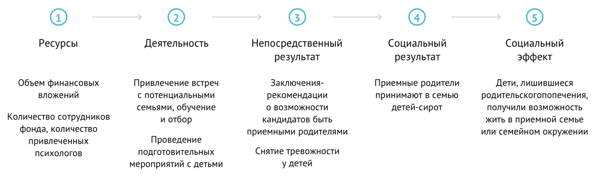
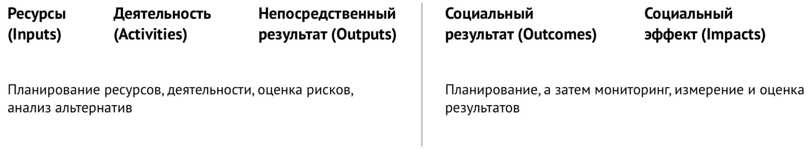

Цепочка социальных результатов (ЦСР, цепочка достижения социальных результатов) – это наглядное описание того, что составляет суть проекта; за счет чего происходят позитивные изменения в жизни благополучателей (участников, партнеров) проекта.
В социальном проектировании ЦСР – это синоним логической модели (или логической рамки) проекта. ЦСР используется при планировании, реализации, мониторинге и оценке проектов. Визуальное представление ЦСР проекта (таблица, рисунок,
слайд и пр.) значительно облегчает работу команды проекта, помогает в коммуникациях с партнерами, донорами, участниками проекта и пр.
Что включает в себя цепочка социальных результатов?
Основные элементы ЦСР – ресурсы, необходимые для реализации проекта, осуществляемая деятельность, а также результаты – непосредственные и социальные (изменения, которые происходят благодаря осуществляемой деятельности).

-
Ресурсы (Inputs)
- Люди, деньги, помещения, оборудование, технологические платформы, методики
- Все, что организация вкладывает для достижения целей проекта
-
Деятельность (Activities)
- Все, что организация осуществляет в рамках проекта (консультации, тренинги, обучающие и развлекательные мероприятия и пр.), чтобы достичь позитивных изменений в жизни целевых групп (благополучателей)
-
Непосредственные результаты (Outputs)
- Количественные результаты осуществленной Деятельности - количество проведенных мероприятий, оказанных услуг, участников программы и пр.
-
Социальные результаты (Outcomes)
- Изменения в уровне знаний и навыков
- Изменение мнения, отношения по конкретным темам
- Изменение моделей поведения
- Изменения социального статуса (материального положения, трудоустройство, вступление в брак, создание семьи и пр.)
-
Социальные эффекты (Impacts)
- Позитивные изменения, которые ожидаются от реализации проекта (изменение подходов к воспитанию детей, улучшение здоровья благополучателей и пр.)
- Как правило, долговременные, отложенные изменения в жизни благополучателей или в жизни сообщества в целом (например, изменение нормативной базы и пр.)
ВАЖНО
- Краткость – сестра таланта. Оптимальный размер ЦСР – не более 1 страницы, все менее значимые детали проекта лучше опустить
- Читабельность и доступность: ЦСР – это про понятность, про понимание основной сути проекта
- ЦСР зависит от целей описания проекта – планирование, оценка и пр.
- Вариантов визуализации ЦСР – бесконечное множество, сервис ПИОН – лишь один из них
- Каждая организация подбирает для себя способ описания и визуализации проекта (ЦСР), удобный именно для нее
Пример
Цепочка социальных результатов программы Благотворительного детского фонда «Виктория» «Устройство детей в семью и подготовка приемных родителей.

Особенности планирования цепочки социальных результатов
Процесс разработки проекта и ЦСР, как правило, носит циклический характер. Сначала ставится цель (формулируются социальные результаты), которую желательно достичь в рамках проекта. Затем цель соизмеряется с возможностями организации – планируется, какие
действия необходимо предпринять, какие для этого нужны ресурсы, насколько они доступны. При необходимости, корректируется цель проекта.

При планировании проекта, целесообразно начинать справа налево – с проработки раздела «социальный результат» и (если применимо) «социальный эффект».
Создание ЦСР (и системы измерения и оценки социальных результатов в целом)
само по себе можно рассматривать как отдельный проект. В связи с этим, прежде чем приступить к работе, имеет смысл ответить на вопрос – какова цель разработки ЦСР (системы измерения и оценки)? Кто примет участие в разработке и
дальнейшем ее внедрении? Какие у вас есть для этого ресурсы? Как вы планируете использовать получаемые данные?
Подробнее смотрите в Вебинаре
Программа «Система измерения и оценки программ в области социального сиротства: онлайн-сервис, экспертная поддержка и вдохновляющие кейсы»
Практическое руководство по измерению социального воздействия (A Practical Guide to Measuring and Managing Impact), EVPA, 2013
Рекомендации по оценке социально-экономической эффективности социальных программ: определения, подходы, практический опыт. М., 2014
Теория изменений: общие рекомендации к применению (из опыта БДФ «Виктория»). М., 2014
Хатри Г., Мониторинг результативности в общественном секторе, 2005
Руководство по оценке результатов программ социальной направленности для специалистов cоциально ориентированных некоммерческих организаций
Предыдущая тема
Следующая тема